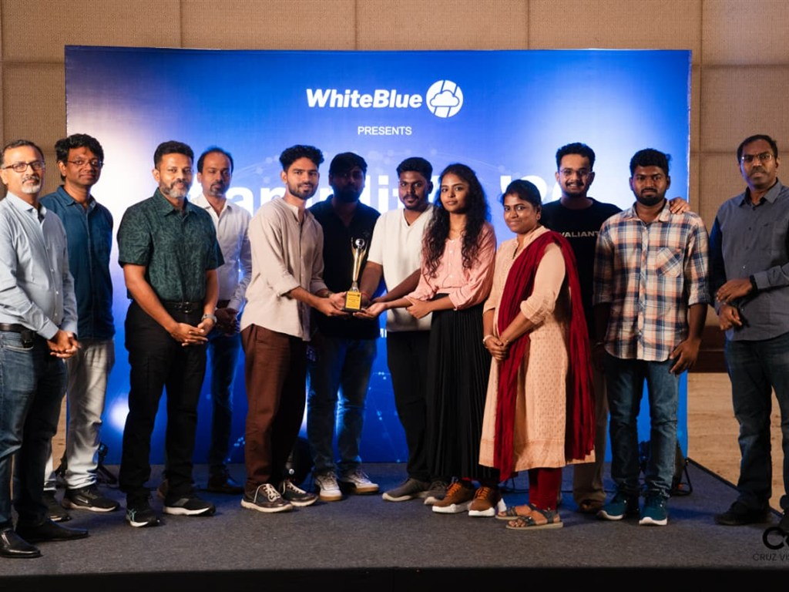
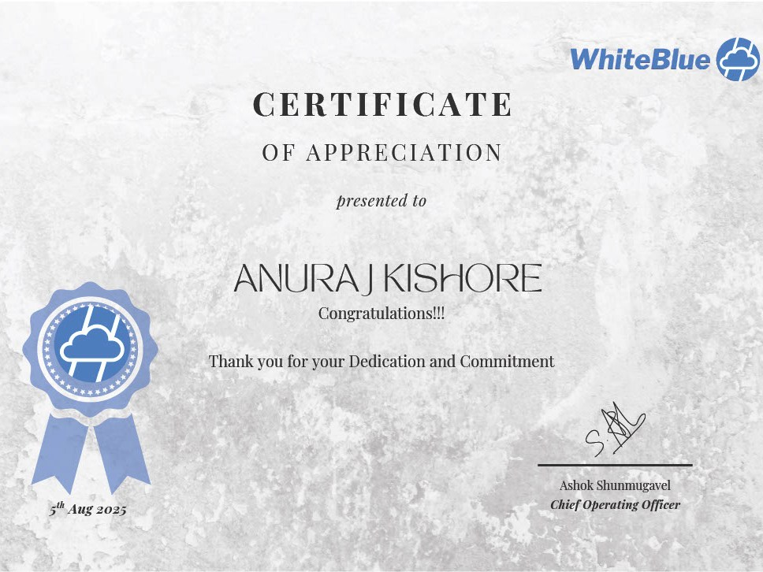
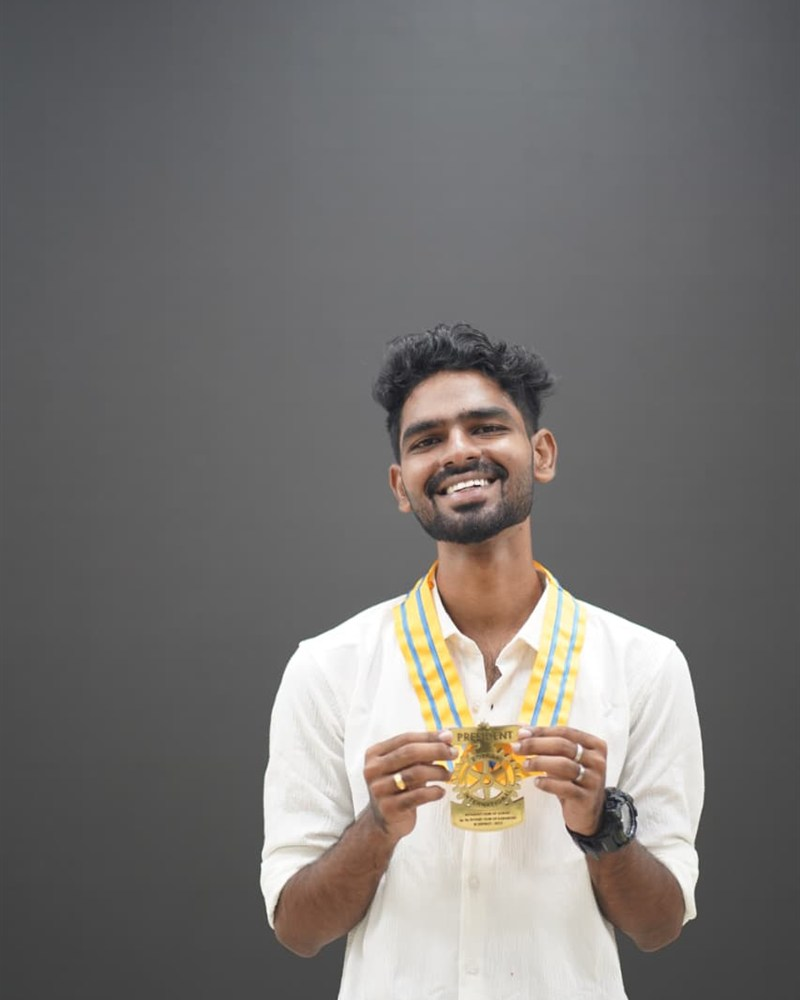

.NET Backend Developer
Anuraj
Kishore J
Hi there! 👋 I'm a backend-focused .NET Developer, merging clean architecture with practical engineering to build APIs that quietly get the job done.
About
I'm Anuraj — a backend developer who likes the parts of an application most people never think about. The endpoint that returns exactly what it promises, every single time. Two years into building APIs in C# and ASP.NET Core, that's still the part of the job I enjoy most.
Most of my work lives inside insurance and asset-leasing platforms — EF Core, SQL Server, and the Azure services that keep documents, notifications, and background jobs moving without anyone having to think about them. I'd rather spend an extra hour on a clean abstraction than leave something clever and fragile behind for the next person.
Before backend development, I studied Electronics and Communication Engineering, and spent a year leading my college's Rotaract Club as President — which turned out to be its own kind of debugging: a lot of listening, a lot of small fixes, and the occasional system that finally clicks into place.
Skills
- Backend
- C#, ASP.NET Core, Web API, EF Core, SOLID principles, Clean Architecture
- Database
- SQL Server, query optimization, stored procedures
- Cloud
- Azure Blob Storage, Azure Functions, Azure AI Document Intelligence, Azure DevOps (CI/CD)
- Auth & Integration
- JWT authentication, Microsoft Graph API, Hangfire (background jobs)
- Testing & Tooling
- xUnit, Git
- Frontend exposure
- Angular, TypeScript — I integrate APIs with an Angular frontend; not where my depth is, but I work with it comfortably
Experience
WhiteBlue Cloud Services, Chennai — Associate Software Engineer, Dec 2024 – Present. The engagements below are client work delivered as part of that role, not personal projects.
-
01
Insurance Broker & Policy Management Platform
An insurance SaaS platform. I built JWT-secured APIs for broker and policy workflows on EF Core and SQL Server, documented with Swagger. The part I owned most fully was document automation — wiring up Azure Blob Storage for document handling and building an OCR flow on Azure AI Document Intelligence to extract and classify data from passports, visas, and Emirates IDs, cutting manual verification work by roughly 50%.
-
02
Asset Leasing Customer Portal
A customer portal for asset lease management, originally a legacy ASP.NET MVC application. I migrated the backend to a .NET Web API so a React frontend could consume it cleanly, added Swagger/OpenAPI documentation, and refactored the controllers and services to cut down on duplicated logic. The work was recognized with an appreciation certificate from the team.
-
03
Insurance Claims Automation System
A claims-automation system for medical insurance. My scope was the API layer: the ticket lifecycle, including creation, history tracking, and the assignment and reassignment logic that routes a claim to the right agent. I used the Microsoft Graph Email API for automated status and update notifications to clients and agents.
-
04
Internal Timesheet Management System
Proposed and delivered CRUD APIs for an internal Timesheet Management System that replaced manual, Excel-based logging for 150-plus employees — built in ASP.NET Core and SQL Server, with Azure Functions handling scheduled automation.
Achievements

Best Team of the Year, 2025
Recognized as part of the award-winning team at WhiteBlue Cloud Services.

Certificate of Appreciation
For the Asset Leasing Customer Portal migration.
Education
- Degree
- Bachelor of Engineering, Electronics and Communication Engineering
- Institution
- A.C. Government College of Engineering and Technology, Karaikudi, India
- Duration
- 2020 – 2024
Leadership

As elected President, I led the College Rotaract Club to the District Award for Best Club in Youth Service. Running a 20-plus member team, we organized more than ten events and two fundraisers across the academic year — including a Diwali fundraiser that delivered supplies and hosted activities at a nearby disabled home, and one held with the college's Music Club. Together the two raised over ₹23,000 for the causes we were backing.
I also ran an outreach initiative teaching basic math and English to more than 100 primary school children, and revived the club's Rotary charter after a four-year lapse. I represented the college at RYLA 2023, a district-level Rotary leadership camp in Kodaikanal with 55 delegates.